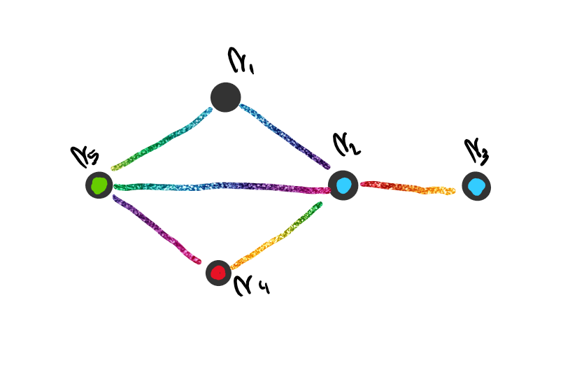

Un coloreo de vértices es una función \(f\) tal que:
Siendo \(A\) un conjunto de colores.
Por ejemplo, para el siguiente grafo defino la función \(g\):
 $$ g:V_G\rightarrow \{Rojo,Verde,Azul,Negro\}/ g(v_i)= \left\{ \array{ Rojo & i=4\\ Verde & i=5\\ Negro & i=1\\ Azul & i=2 \lor i=3 } \right. $$ Podemos ver que este colores es un [$4-coloreo$](#$k-Coloreo$).Tomemos el siguiente grafo:

Podemos decir que es un \(3-coloreo\) y que además es un [coloreo propio](#\(k-Coloreo\) propio).
El objetivo de este tema es pintar un grafo con un coloreo propio, utilizando la mínima cantidad de colores.
Tomemos el siguiente grafo \(K_3\):

Decimos que \(K_3\) es [3 critico](#Grafo \(k-critico\)) por que \(\chi(K_3)=3\) y \(K_3-\{e\}\) es [2 coloreable](#Grafo \(k-coloreable\)). Tambien podemos decir que es una [obstrucción \(2\) cromática](#Obstrucción \(k\) cromática).
Tomemos el grafo \(C_{2n+1}\). Este grafo es [3 critico](#Grafo \(k-critico\)) para todo \(n\ge1\) ya que \(\chi(C_{2n+1})=3\) y como \(C_{2n+1}-\{e\} = P_{2n+1}\), y sabemos que \(P_{2n+1}\) es bipartito, \(\chi(P_2{n+1})=2\) y el grafo es \(2\) coloreable.
Tambien podemos decir que \(C_{2n+1}\) es [CCO \(2\) cromático](#Conjunto Completo de Obstrucciones \(k\) cromáticas), ya que \(C_{2n+1}\) es \(3\) critico. Además si \(\chi(G)\ge 3\), \(\Rightarrow\) \(G\) no es bipartito, \(\Rightarrow\) \(G\) tiene al menos un ciclo de longitud impar, \(\Rightarrow\) \(C_{2n+1} \subset G\) para algún \(n \in \mathbb{N}\).
Tomemos el grafo \(K_2\). Es una obstrucción \(1\) cromática por que es \(2\) critico ya que \(\chi(K_2)=2\) y \(\chi(K_2-\{e\})=1\).
Además, como \(K_2 \subset G~~\forall G \text{ con al menos una arista}\), entonces \(\{K_2\}\) es un [CCO \(1\) cromático](#Conjunto Completo de Obstrucciones \(k\) cromáticas).
Tomemos el siguiente grafo \(G\):

Podemos ver que tiene los siguientes conjuntos de vértices independientes:
Podemos calcular la [independencia](#Independencia de un Grafo) tal que \(ind(G)=2\)
Un \(k-coloreo\) es un coloreo que usa exactamente \(k\) colores.
Es un coloreo donde los vértices adyacentes no tienen el mismo color.
Dado un \(k-coloreo\), se llama clases de color al conjunto de vértices que tienen el mismo color.
Decimos que un grafo es \(k-coloreable\) si tiene un coloreo propio que usa exactamente \(k\) colores.
Se define al numero cromático de \(G\) como la mínima cantidad de colores necesaria para tener un coloreo propio.
Se lo nota como \(\chi(G)\).
Si \(\#E_G > 0\), entonces \(\chi(G)\ge2\)
\(G\) no es bipartito, si solo si, \(G\) no tiene ciclos de longitud impar, entonces \(\chi(G)\ge 3\)
Si \(H \subset G\), entonces \(\chi(G)\ge \chi(H)\)
\(\chi(K_n)=n\)
\(\chi(G+H) = \chi(G) + \chi(H)\)
Todos los vértices de \(G\) están conectados a los de \(H\) y viceversa, entonces los colores que usa \(H\) no pueden usarse para los vértices de \(G\).
Utilizando a la [independencia](#Independencia de un Grafo), podemos calcular que $\chi(G) \ge \lceil {\frac{#V_G}{ind(G)}}\rceil $
[Demostración](Demostraciones\12 - Coloreo\Proposicion - 03.html)
Sea \(G\) un grafo tal que \(\chi(G)=k\) y \(G-\{e\}\) es \(k-1\) coloreable \(\forall e \in E_G\)
Una obstrucción \(k\) cromática es un subgrafo \(H\) de \(G\) (\(H\subset G\)) que obliga a que \(\chi(G)>k\).
Sea un conjunto de grafos ${G_j/G_j \text{ es \(k+1\) critico}}$. El conjunto es un conjunto completo de obstrucciones \(k\) cromáticas si todo grafo \(k+1\) coloreable contiene al menos un representante de los \(G_j\) como subgrafo.
Un conjunto de vértices de \(G=\{v_i\}_{1\le i\le q}\) es independiente si \(v_i\) no es adyacente a \(v_j\) \(\forall 1\le i\le j\le q,~i\neq j\).
Se llama independencia de \(G\) a la cantidad de vértices del mayor conjunto de vértices independientes de \(G\).
Siendo \(A_j\) un conjunto de vértices independientes de \(G\).
Sea \(G\) un grafo conexo [\(k\) critico](#Grafo \(k-critico\)), entonces \(G-\{v\}\) es [\(k-1\) coloreable](#Grafo \(k-coloreable\)) \(\forall v\in V_G\)
[Demostración](Demostraciones\12 - Coloreo\Proposicion - 02.html)
Sea \(G\) conexo y [\(k\) critico](#Grafo \(k-critico\)), entonces \(gr(v_i) \ge k-1~~\forall v_i\in G\).
[Demostración](Demostraciones\12 - Coloreo\Proposicion - 01.html)
\(\chi(G)\le \delta_{max}+1\), con \(\delta_{max}=max_{\forall v_i \in V_G} \{gr(v_i)\}\)